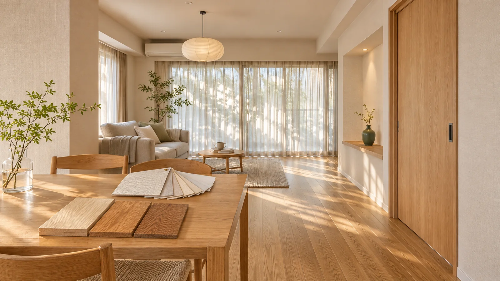
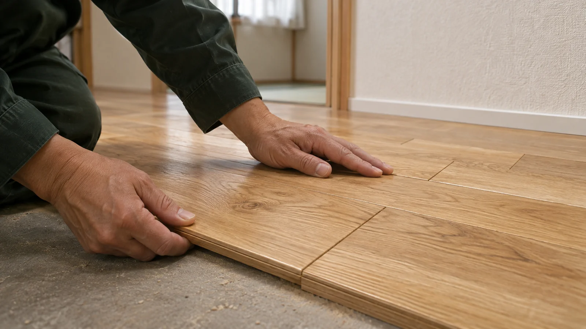
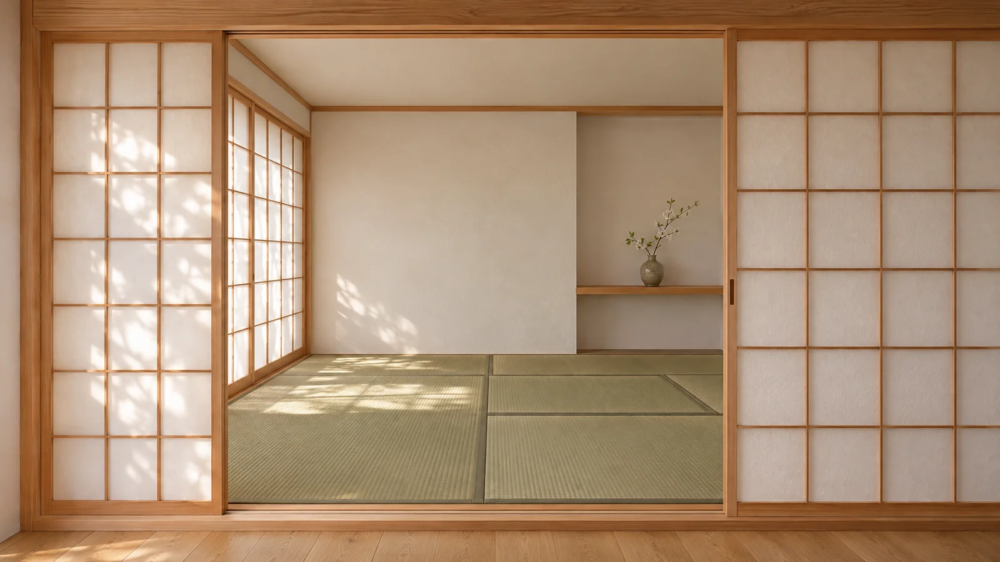

クリーンケアサービス ／ 内装工事

工事メニューと参考料金
気になる工事をいくつでもお選びください。料金は税込の目安です。広さや材料を伺って、正式なお見積もりをご案内します。
壁・天井7件
床・畳14件
窓・建具18件
水まわり16件
収納・取り付け15件
間取り・住宅診断5件
バリアフリー・ペット7件
お気軽にご相談ください
メールで相談するお問い合わせは無料です。工事は、お見積もりをご確認いただいてから進めます。
選択した内容と備考がメールに入ります。開いたメールから送信してください。写真も添付できます。 お電話でも承ります。070-3220-4946壁・床・和室の仕上がり
壁紙の質感、木目の向き、畳と障子の組み合わせを18秒でご覧いただけます。


どこから手をつけるか、決まっていなくても。
「見た目を整えたい」「傷んだ部分が気になる」「清掃と工事のどちらが必要か分からない」。工事名が分からなくても、今の状態と、どう使いたいかをお伝えください。
- 見た目や傷みが気になる気になる場所の写真と、いつ頃から気になっているかをお知らせください。
- 退去後の部屋を整えたい次に使い始めたい時期と、清掃も含めて相談したい範囲をお知らせください。
- 使い方に合わせて相談したい現在の使い方と、変えたい点をお聞かせください。必要な確認から整理します。
ご相談から、内容を確かめて進めます。
- 1 ご希望をお聞かせください対象の場所、お困りのこと、ご希望の時期を伺います。
- 2 状況と対応範囲を確認写真や現地の状況をもとに、必要な確認や対応できる範囲を整理します。
- 3 費用・日程をご案内工事内容、清掃の範囲、施工担当、費用と日程をご確認いただいてから進めます。
- 4 完了時の確認ご案内した作業内容と仕上がりを確認します。
ご相談前によくある質問
工事するか決めていなくても相談できますか?
お困りの場所とご希望からお聞かせください。工事や清掃の内容を決める前に、必要な確認を整理します。
写真だけで金額が決まりますか?
写真で分かる範囲には限りがあります。下地や設備など現地での確認が必要な場合は、その内容をご案内します。
清掃も一緒に相談できますか?
工事のご希望とあわせて、清掃したい場所もお知らせください。それぞれの範囲と順序を確認します。
賃貸の部屋でも相談できますか?
工事を進める前に、所有者・管理会社の承諾や建物のルールを確かめる必要があります。相談時に賃貸であることをお知らせください。
関連:清掃サービス ・ ビル・マンション管理 ・ お問い合わせ